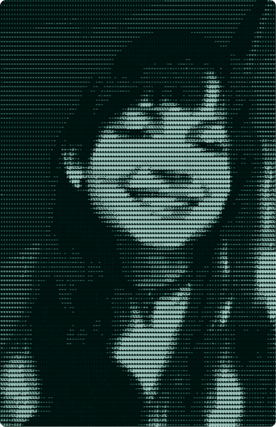

~[About Me]
- General:
- Pursuing my Master’s in CS with a focus in GPUs, Compilers, and Operating Systems
- Hobbies:
- Music, running, rock-climbing, disassembling old tech, fashion.
- Latest Project:
- Putting HomeBrew on PSP3000, CyberDeck

Hello traveler, welcome back